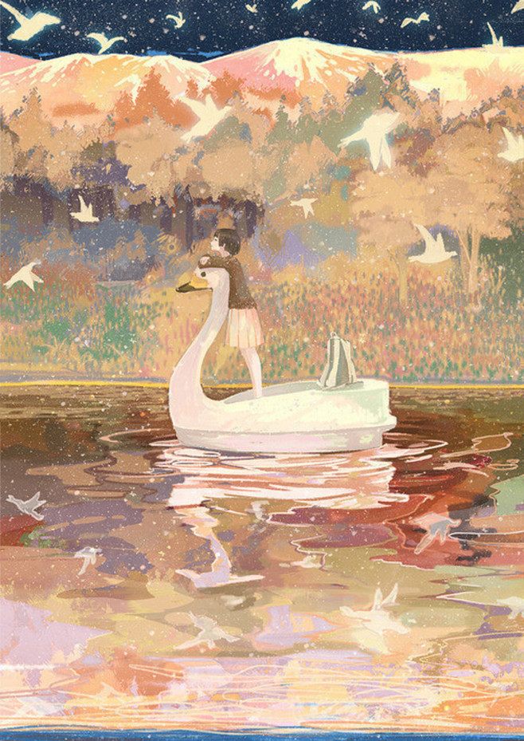
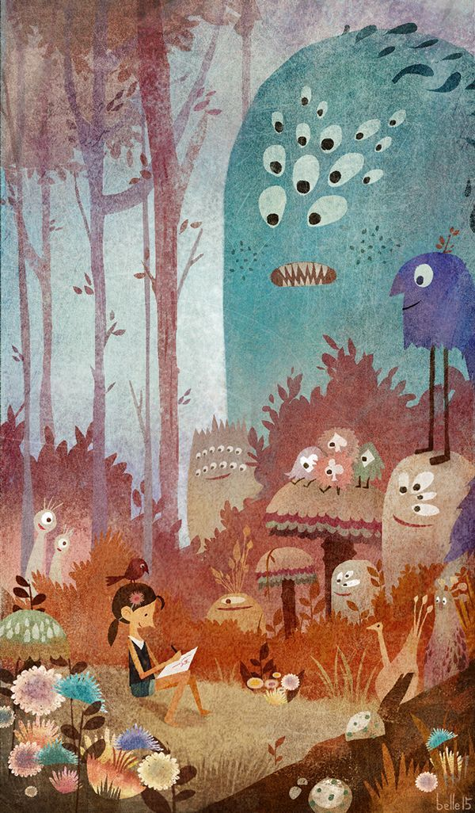

my story |
|||
| echo | my description | my instruct | my sport |
| 我，一个矿大大二的学生，在别人眼里我内向不招人喜欢，其貌不扬，成绩平平，但我也是渴望朋友的。 我性格内向，喜欢安静，所以经常自己画画弹弹古筝，偶尔，也喜欢刺激的，比如轮滑。 我喜欢文艺的事情，喜欢结交懂我的朋友。 我也很笨，学什么都很慢，甚至学不会。下面是我最喜欢的一段话。 人只有将寂寞坐断，才可以重拾喧闹；把悲伤过尽，才可以重见欢颜；把苦涩尝遍，就会自然回甘。信了这些，就可以更坦然地面对 人生沟壑，走过四季风霜。言者随意，但生命毕竟是一个漫长的过程，每一寸时光都要自己亲历，每一杯雨露都要自己亲尝。 一路走来，太累了，停下来歇歇吧，多休息一会，是为了走更远的路。抬头看看天，看乌云的缝隙里钻出的斑驳阳光，重新拾起前行的勇气和信心；回首望望来路，想想丢下了什么，还有什么可以丢下的，只要心灵轻松些，任何放弃都是一种努力。坚定地走吧，毕竟梦想在远方，未来在远方，终点也在远方。 |
 | ||